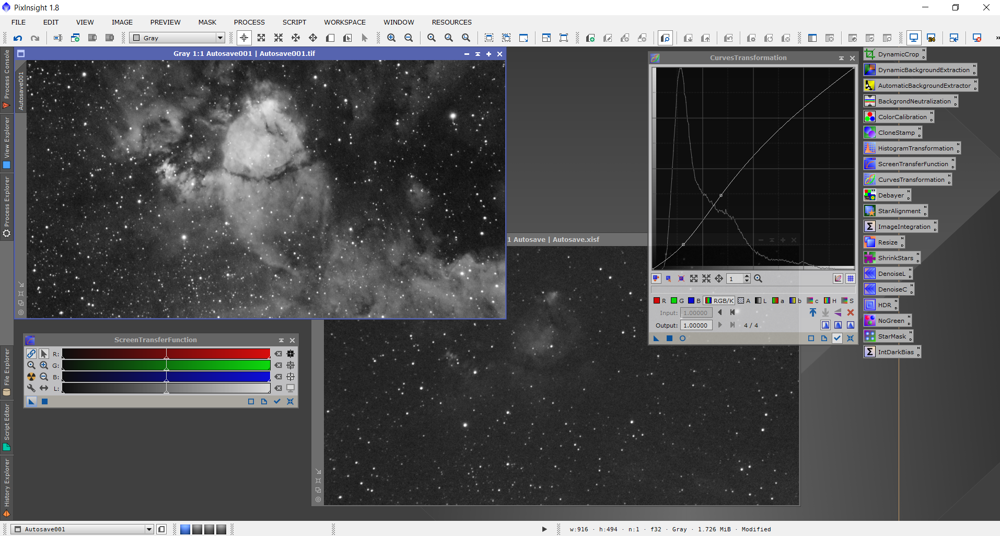

Odata ce au fost facute poze pe tot parcursul noptii, incepe procesul de editare. Acesta de asemenea este unul complex, insa odata efectuat, pozele vor prinde cu adevarat viata si culoare.
Totul incepe prin alinierea si suprapunerea tuturor pozelor pentru a reduce zgomotul si a scoate in evidenta detaliile obiectului fotografiat.
Odata suprapuse, se poate observa un preview al pozei, insa acesta este departe de rezultatul final. Urmatorul pas este cresterea contrastului si aducerea in prim-plan a detaliilor.
Ultimul pas este combinarea pozelor facute pe mai multe lungimi de unda, aparand astfel si culoarea in poza.